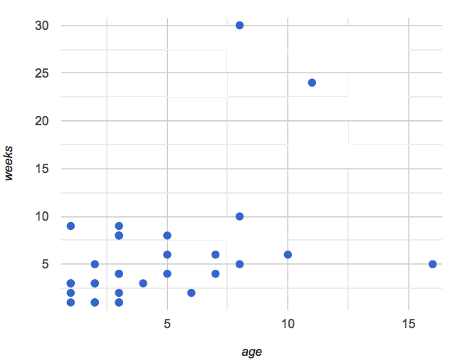
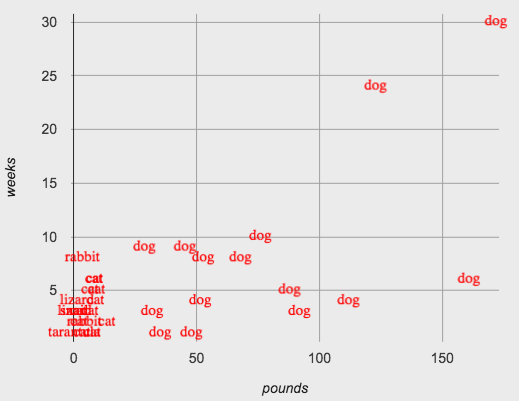
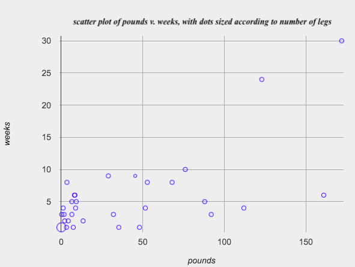
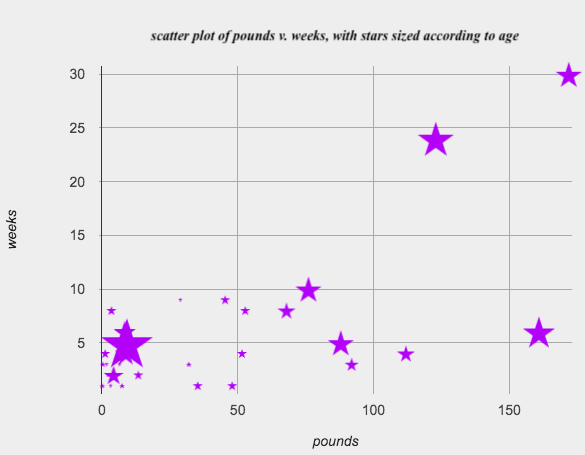
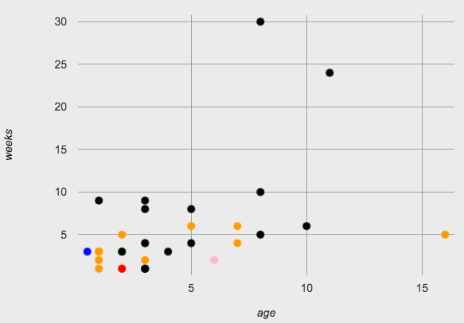

Custom Scatter Plots
Custom scatter plots expose deeper insight into subgroups within a population, motivating students to define their own functions and deepen their analysis.
|
Lesson Goals |
Students will be able to…
|
|
Student-facing Lesson Goals |
|
|
Materials |
|
conditional-
a code expression made of questions and answers
data type-
a way of classifying values, such as: Number, String, Image, Boolean, or any user-defined data structure
piecewise function-
a function that computes different expressions based on its input
scatter plot-
a display of the relationship between two quantitative variables, graphing each explanatory value on the x axis and the accompanying response on the y axis
| Image Scatter Plots | 40 minutes |
Overview
Students are introduced to their first example of a custom scatter plot, which makes use of the image-scatter-plot function to replace each animals' dot with the name of the species. They then write code for another custom scatter plot.
Launch
Not all data points are created equal! Dogs and rabbits are very different, but when viewing all the animals on the same scatter plot, these differences are hidden.
This makes the displays more interesting, and helps us to dig deeper into analyzing the data.

{kind=link}
Investigate
Let’s start with some review, combining our knowledge of row and column lookups with our knowledge of how to define functions. Note: Confirm that students' responses are correct before moving from one page to the next (below). Checking for understanding is crucial here.
-
Turn to Defining Row-Consuming Functions, and complete numbers 1-3 at the top of the page.
-
When you are confident with the code you have written - check with your teacher or a partner - complete the rest of the page to define a function
species-tag. -
Now, open Custom Scatter Plot Starter File. Does your definition of
species-tagmatch what you see here? -
What do you Notice? What do you Wonder?
-
What functions do you see defined? What do they do? What Rows do you see defined?
The contract for image-scatter-plot looks pretty different from other contracts we’ve seen.
image-scatter-plot :: (
t :: Table,
xs :: String,
ys :: String,
f :: (Row -> Image)
) -> ImageThe function image-scatter-plot has an interesting Domain: Table, String, String and… what is that last part?… a Function that consumes a Row and produces an Image!
-
Complete Custom Scatter Plot - Explore.
-
As you work, consider how
image-scatter-plotis different from other functions we’ve seen, and how it might be useful to our data analysis.
Synthesize
Ask students how having the dots labeled with the species changes their understanding of the data. Students should recognize that the species-tag scatter plot makes it clear that we may want to analyze each species separately, rather than grouping them all together. (In the Grouped Samples lesson, students will learn how to do just that!)
Ensure that students understand what the various functions in the file do. The species-tag function labeled dots with the species:

{kind=link}
The legs-tag function made blue rings whose size was determined by the number of legs the animal had:

{kind=link}
And the age-tag function made stars whose size was double the age of the animal:

{kind=link}
-
What data type is
species-tag?-
A function that consumes a Row and produces an Image
-
-
How does
image-scatter-plotwork?-
It consumes a Table, a String, a String, and a Function that consumes a Row and produces an Image. It can label each point with some text, a different sized dot, or a star.
-
-
What are some other ways you could use columns of the Animals Dataset to display more interesting image-scatter-plots?
-
Answers will vary.
-
-
What does an
image-scatter-plotexpression need to have defined in order to display a scatter plot with the animals' names in place of dots?-
We would need to define a
name-taghelper function.
-
To close this segment of the lesson, invite students to consider how image-scatter-plot might be useful to their own analysis.
| Optional: Using Conditionals | 25 minutes |
Overview
Students discover how to use conditionals - piecewise functions in math - to change dot colors and sizes, how "dot appearance" can be used to show more data in a scatter plot, and why that would be valuable.
NOTE: Math teachers may want their students to confront piecewise functions more deeply, and CS teachers may want to spend more time on conditionals. While not a part of the Data Science pathway, the Piecewise Functions and Conditionals lesson includes a lot of supporting material and practice pages for these topics, including the student notes on piecewise functions.
Launch
So far, we’ve seen that…
-
the
scatter-plotfunction makes uniform blue dots -
the
image-scatter-plotfunction can label each point with some text, a different sized dot, or a star.
Explain to students that to get more out of the image-scatter-plot function, we’ll need to use a different kind of function called a "piecewise function".
-
Open the Custom Scatter Plot with Piecewise Functions Starter File and complete species-dot - Explore.

{kind=link}
-
What does this new visualization (above) tell us about the relationship between age and weeks?
-
In general, as an animal gets older, the weeks to adoption increase. This appears to be true for both dogs (black dots) and cats (orange dots).
-
-
What other analysis would be helpful here?
-
Sample answer: It might be interesting to look at the outliers to understand why some animals' adoptions take a longer amount of time.
-
Investigate
-
What is the contract for
species-dot?-
The function name is
species-dot, its Domain is Row, and its Range is Image.
-
-
What is the purpose of
species-dot?-
It takes in a Row from the animals table and returns a solid, 5px circle using black for dog, orange for cat, pink for rabbit, red for tarantula, green for lizard and blue for snail.
-
-
How many examples do we need to write?
-
We need to write six examples, one for each species.
-
-
Optional: Complete the Word Problem: sex-dot, to write a new helper function that will make differently-colored dots based on the animals' sex.
Make sure that students write the Contract first , and check in with their partner and the teacher before proceeding. Once they’ve got the Contract, have them come up with examples: for each sex. Once again, have them check with a partner and the teacher before finishing the page.
Debrief, and ask students to explain what the code does. Pay special attention to students' ability to articulate the "if/then" statements!
-
Turn to Animal-Image - Explore and open the Custom Animals Starter File Starter File.
-
How does using clipart help us to better understand the data?
-
The images are cool! And they make it so easy to understand whether the species are evenly distributed or clustered.
-
-
What risks might there be to using clipart in displays?
-
Sample response: Clipart of humans runs a serious risk of stereotyping or excluding populations!
-
-
We have seen a lot of different image scatter plots today! What ideas do you have for how
image-scatter-plotcould be used to deepen the analysis of your dataset?
|
Optional: When your conditional is already a Boolean
If you have time or students who are ready for a challenge, you can also have them make a scatter plot for dots distinguishing whether the animal is fixed or not using the directions at the end of the starter file or Word Problem: fixed-dot. Students will discover that this is a little different from the other two functions they’ve seen because
For students who are really ready for a challenge, direct them to the Dots for Value Ranges Starter File and Dots for Value Ranges - Explore |
Synthesize
How do piecewise functions expand what is possible with the image-scatter-plot function?
These materials were developed partly through support of the National Science Foundation,
(awards 1042210, 1535276, 1648684, and 1738598).  Bootstrap by the Bootstrap Community is licensed under a Creative Commons 4.0 Unported License. This license does not grant permission to run training or professional development. Offering training or professional development with materials substantially derived from Bootstrap must be approved in writing by a Bootstrap Director. Permissions beyond the scope of this license, such as to run training, may be available by contacting contact@BootstrapWorld.org.
Bootstrap by the Bootstrap Community is licensed under a Creative Commons 4.0 Unported License. This license does not grant permission to run training or professional development. Offering training or professional development with materials substantially derived from Bootstrap must be approved in writing by a Bootstrap Director. Permissions beyond the scope of this license, such as to run training, may be available by contacting contact@BootstrapWorld.org.